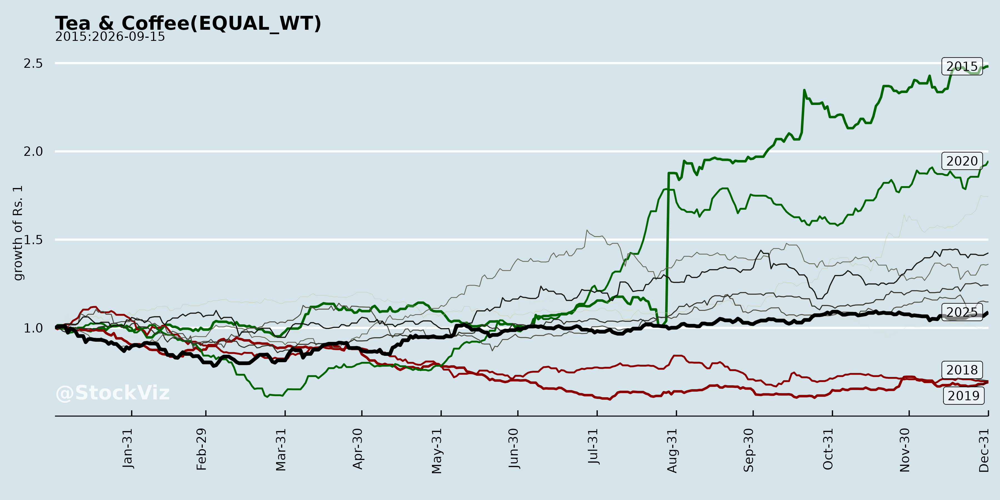
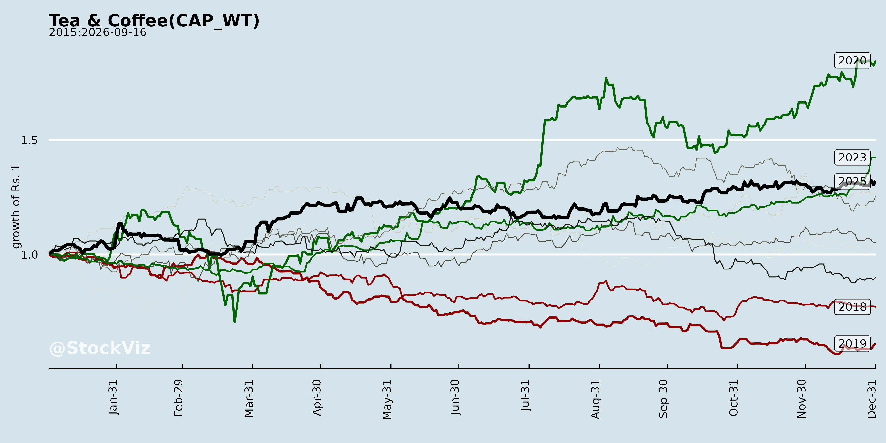
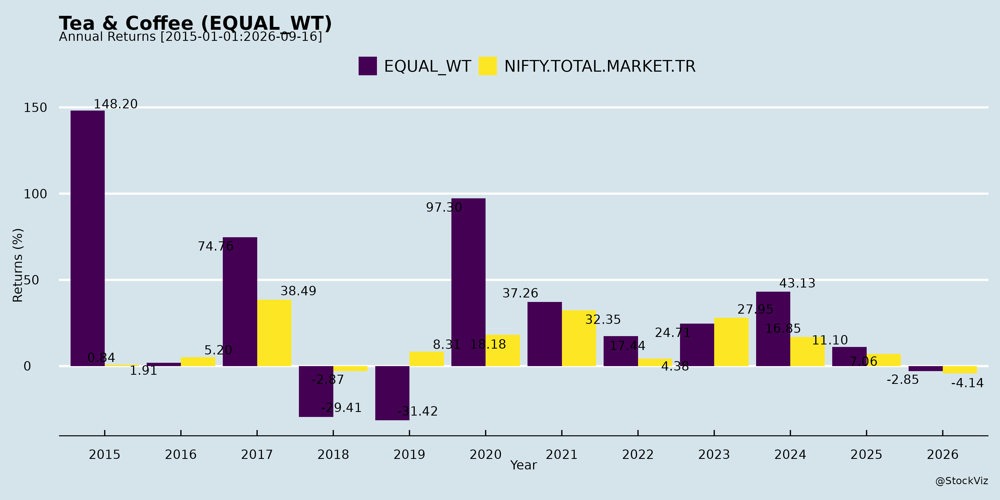
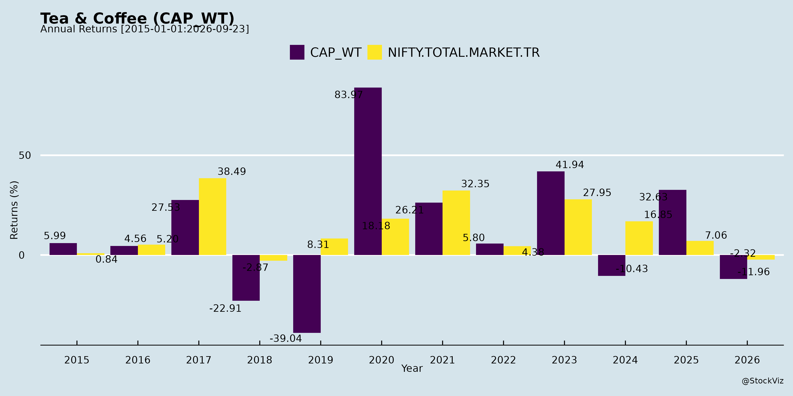
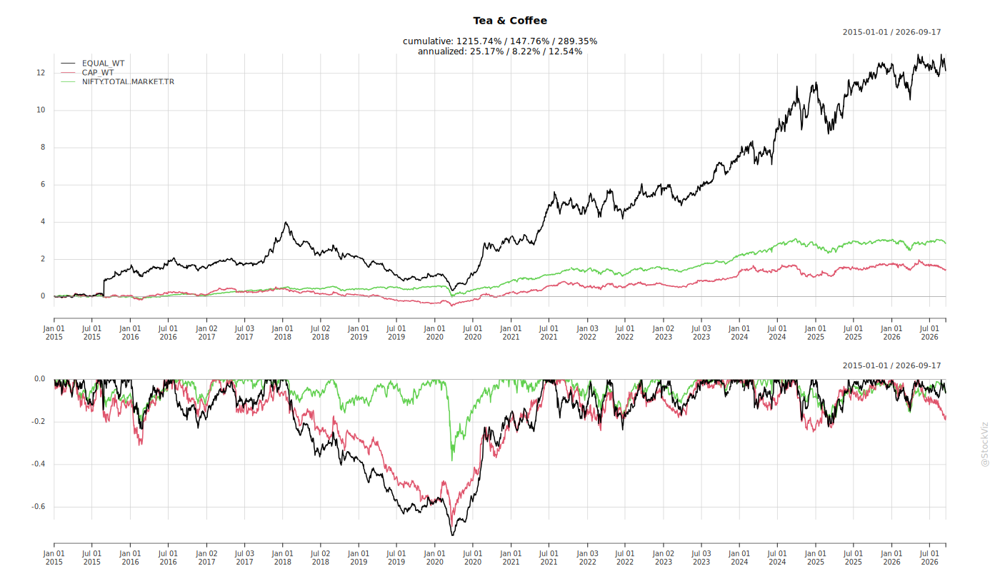
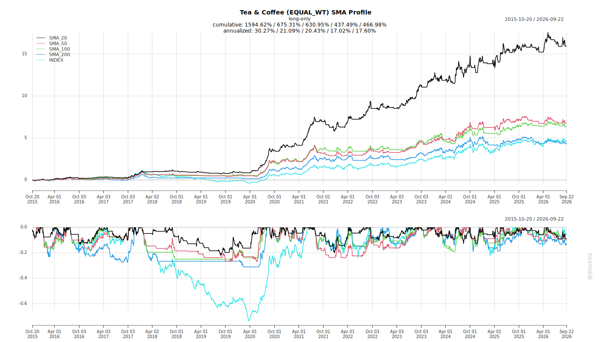
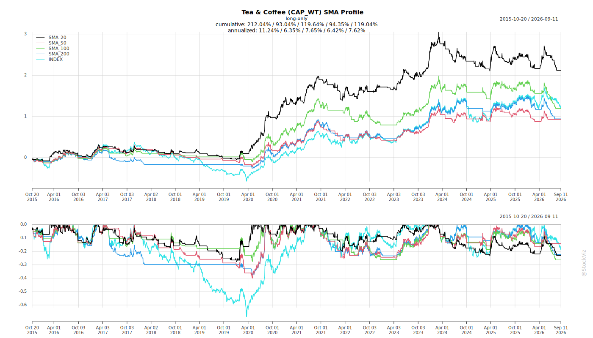
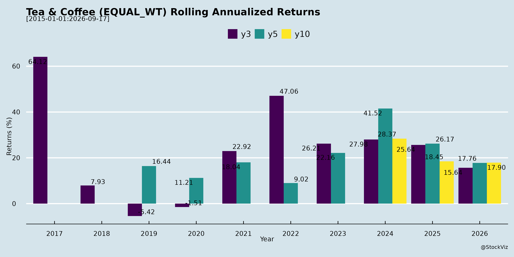
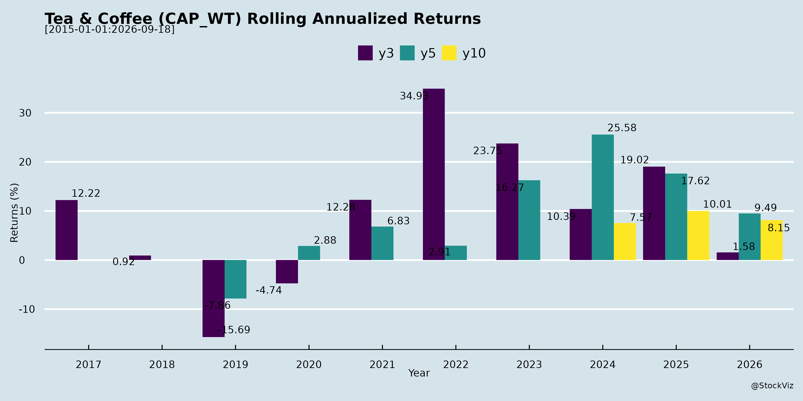

asof: 2025-11-27
Analysis of Indian Tea & Coffee Sector (Focus on Coffee from Provided Documents)
The provided documents primarily cover CCL Products (India) Ltd. (a leading instant coffee exporter with growing domestic branded presence) via its Q2 FY26 earnings call transcript, offering deep insights into the coffee sub-segment. Tata Consumer Products Ltd. (a major player in both tea and coffee) provides minimal data (only investor meeting schedule), limiting tea-specific analysis. Insights are extrapolated to the broader Indian tea & coffee sector, where coffee is export-driven (volatile commodity) and tea is more domestic/staple-oriented. CCL’s performance reflects sector tailwinds like branded growth amid volatility.
Tailwinds
Headwinds
Growth Prospects
Key Risks
Summary
Bullish Outlook with Volatility as Anchor: Indian coffee (proxy via CCL) outperforms tea (limited data) on strong branded/export growth (44% H1 EBITDA CAGR), domestic share gains, and efficiencies, positioning for 15-20% sustained growth/FMCG pivot. Tailwinds (demand, volumes, distribution) outweigh headwinds (prices, competition), but risks center on crop volatility/debt. FY26 on track for upper guidance; sector prospects bright if prices stabilize by Dec (Vietnam harvest). Investors: Focus volumes over revenue; monitor Vietnam/Brazil updates. Tata’s engagement hints steady tea momentum. Net: Positive (Buy/Hold bias for coffee leaders like CCL).
asof: 2025-11-27
Summary Analysis: Indian Tea & Coffee Sector (Focus on CCL Products as Proxy for Coffee; Tata Consumer as Tea Context)
Using the provided documents (CCL Products Q2 FY26 Earnings Transcript and Tata Consumer investor meeting notice), the analysis focuses on the Indian coffee sector (dominated by CCL’s insights, a leading instant coffee exporter/manufacturer) with limited tea-specific data (Tata’s notice is procedural, signaling investor engagement but no UPSI). CCL represents ~key trends in branded/export-oriented coffee, while tea (e.g., Tata) remains underrepresented. Overall sector outlook: Positive momentum in domestic branded demand and volumes, offset by commodity volatility.
Tailwinds (Positive Drivers)
Headwinds (Challenges)
Growth Prospects
| Metric | H1 FY26 (CCL) | Guidance FY26 |
|---|---|---|
| Revenue Growth | 44.5% | Price-dependent (~40% if stable) |
| EBITDA Growth | 33.7% | 15-20% (upper end likely) |
| Volume Growth | ~15% | 10-20% sustained |
| Domestic Branded | INR 210 cr | INR 420-430 cr |
Key Risks
Overall Outlook: Bullish on coffee (Buy/Accumulate proxy via CCL) due to domestic firepower and efficiencies outweighing volatility. Tea subdued (monitor Tata post-meets). Sector CAGR ~12-15% FY26-28, led by branded volumes. Investors: Focus Dec’25 Vietnam crop for re-rating.
asof: 2025-11-27
Indian Tea & Coffee Sector Analysis
Based on Tata Consumer Products Ltd. (TATACONSUM) Q2 FY26 Results (ended Sep 30, 2025) and United Nilgiri Tea Estates (UNITEDTEA) AGM Notice.
Tata Consumer dominates with strong India tea/coffee performance; UNITEDTEA provides no financial insights (procedural AGM notice only). Sector shows robust momentum amid innovation, but weather/competition pose near-term drags.
Tailwinds (Positive Drivers)
Headwinds (Challenges)
Growth Prospects
Key Risks
Summary: Sector tailwinds dominate with Tata’s 18% revenue beat driven by India tea/coffee innovation (+12-56% segments), outweighing mild headwinds (weather/GST). Growth prospects strong (20%+ via premium/RTD/Starbucks), but risks from commodities/competition warrant monitoring. Bullish outlook for leaders like Tata.
Copyright © 2023 SAS Data Analytics Pvt. Ltd. All rights reserved.